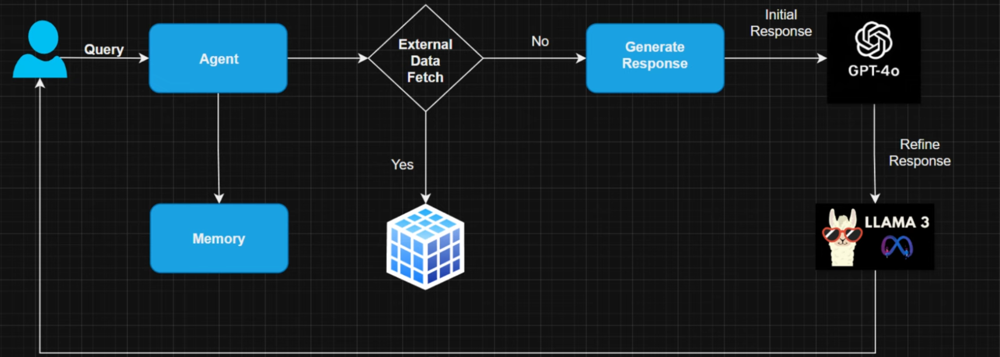

LangChain 学习 01——Hello，LangChain
虽然日期写着 3 月 27 号，但这篇笔记其实 3 月 10 号左右就在写了，这我要快速产出 02 的话会显得自己学太快了……虽然也没啥东西。
LangChain 是一个 Python 框架（库？），用于开发大语言模型（LLM）驱动的应用程序。LangChain 允许大模型和外界进行交互，包括获取外部数据源数据，包括进行函数调用等。这些要是全都手写，那就太麻烦了，所以让它代劳是很好的。这里对它进行一下学习，看看能否把它应用到学习以及生活生产实践中。
LangChain 家族包含四个成员：
- LangChain：就是上面说的 LangChain
- LangSmith：测试、评估、监控大语言模型，用于保证模型的质量和性能
- LangGraph：LangGraph 是 LangChain 的一个扩展，把步骤建模为图中的边和节点（dify？）
- LangFlow：LangChain 的一个 GUI，使用可视化的拖动的方式简化工作流的构建
LangXXXX ？
这个视频 似乎介绍了它们的关系以及如何选择，这里记录一下。

这张图很有意思——LangChain 的（多轮对话的）工作原理，用户和 Agent 交互，Agent 有 Memory，Agent 根据用户的查询选择是去查询外部数据（在这之后是 Agent 继续操作还是让大模型去操作？），还是让大模型去进行生成操作。
LangChain 的 Chain 机制，让我们能把多个工作给串起来，但它究竟和 LangGraph 有啥区别？没讲，搞毛。
然后是 LangGraph，LangGraph 专门用来管理 Agent 和工作流。
……
这个视频做的很弱智，不用看了，我都怀疑这个视频制作者自己有没有看完 LangChain 的教程。还是自己先把LangChain和LangGraph的教程全部自己过一下，然后自己做总结吧！。
首先跟着 https://python.langchain.com/docs/tutorials/ 去看，得到一些感性经验，再看 https://python.langchain.com/docs/concepts/ 去理解 langchain 的架构。
环境搭建
langchain 是 LLM 的客户端，因此不需要 torch 啊 tenserflow 啊 numpy 之类的依赖，直接使用 pip 安装：
1 | |
具体信息参照 https://python.langchain.com/docs/how_to/installation/，它还介绍了其他相关包的安装，包括 langgrpah 等，注意到 langchain 有自己的 CLI，而且有一个 RESTFul API 框架支持直接暴露 LangChain 的 Runnable 和 Chain。
要使用 deepseek 的话，需要安装 deepseek 扩展（？），然后在环境变量中配置 deepseek 的 API KEY，这个应该是第三方提供的集成：
1 | |
然后，实际使用时要从这个扩展去创建 model，后面的使用方式应该和官方是一样的：
1 | |
'你好，世界！Hello, World! こんにちは、世界！Bonjour, le monde! Saluton, mondo! ¡Hola, mundo!'
Hello, LangChain
首先从示例开始，直接和官方的示例一一对应。注意到这些简单示例就已经足够夸张了。这篇文章是用 jupyter 来着的，所以后面就不每次都创建 model 了。
简单对话
简单对话，上面实际上已经显示了它的一般形式了。我们可以任意构造对话历史。invoke 的传参方式有多种：
1 | |
AIMessage(content='beep boop! 🤖 How can I assist you today? 😊', additional_kwargs={'refusal': None}, response_metadata={'token_usage': {'completion_tokens': 16, 'prompt_tokens': 17, 'total_tokens': 33, 'completion_tokens_details': None, 'prompt_tokens_details': {'audio_tokens': None, 'cached_tokens': 0}, 'prompt_cache_hit_tokens': 0, 'prompt_cache_miss_tokens': 17}, 'model_name': 'deepseek-chat', 'system_fingerprint': 'fp_3a5770e1b4_prod0225', 'finish_reason': 'stop', 'logprobs': None}, id='run-ef066c59-e02d-45fa-b7cc-a89dec00b8aa-0', usage_metadata={'input_tokens': 17, 'output_tokens': 16, 'total_tokens': 33, 'input_token_details': {'cache_read': 0}, 'output_token_details': {}})
AI 说不得要用流式输出：
1 | |
|| 你好 || ， || 世界 || , || Hello || , || World || , || || こ || ん || に || ち || は || 、 || 世界 || , || Sal || ut || on || , || mondo || , || Bon || jour || , || le || monde || , || H || ola || , || mundo || ||
此外，有ainvoke和astream方法，它们是异步的。
这里的 model，自己是没有记忆的功能的，要引入记忆功能，要么自己手搓一个，要么去使用 LangGraph Memory。
Prompt 模板
使用用户参数创建 Prompt 是一个很常见的需求，通常 Python 的 f 字符串就能够满足这个需求。langchain 提供了所谓的 Prompt 模板用来干同样的事情，它的方便之处在于能够使用同一个字典去给多个消息同时传递参数。
1 | |
ChatPromptValue(messages=[SystemMessage(content='Translate the following content from chinese to english', additional_kwargs={}, response_metadata={}), HumanMessage(content='你好，世界！', additional_kwargs={}, response_metadata={})])
[SystemMessage(content='Translate the following content from chinese to english', additional_kwargs={}, response_metadata={}),
HumanMessage(content='你好，世界！', additional_kwargs={}, response_metadata={})]
'Hello, world!'
实际上，最简单的对话功能就是这么简单，但这里还没有提供会话历史功能（虽然利用当前已有的东西可以自己实现它），这个待后面继续学。继续跟着它的步调走。
以及，这些暴露像 invoke 这样的接口的类，称为 Runnable，Runnable 是 LangChain 的一个很基础的组成部分，Runnable 是一个实际存在的抽象类，见 https://python.langchain.com/docs/concepts/runnables/。
语义检索
好吧，上来就是重量级——从 PDF 中搜索内容（然而并没有 RAG，sad），和 PDF 对话需要利用到文档加载器，文本切分、嵌入、存储——加载文档内容，按片段切分，进行嵌入化，然后存储进向量数据库。在 LangChain 中，这些步骤都需要我们手动操作，因此显然能获得更多东西。
相关术语是 document loader, embedding, vector store，langchain 对它们均有抽象，显然这提供了 langchain 进行 RAG 的能力。
示例是和 PDF 对话，它需要安装两个新的包，其中langchain-community是第三方集成相关的包（？），pypdf 顾名思义是处理 pdf 的包。langchain-community中包含利用 pypdf 实现的 document loader。
1 | |
要和 PDF 对话是一个多步骤的事情，要加载 PDF，要切分文本，要嵌入向量化，要存储到向量数据库，要从向量数据库中查询，所以这里有必要分节。
Document, Document Loader
LangChain 对 LLM 应用的很多东西都做了抽象，上面把模型、消息模板等都抽象为 Runnable，而 LangChain，无论对 PDF 还是 EPUB 还是 CSV 什么玩意儿的，将它们抽象为 Document。
Document 代表一个文本的单元（unit），以及相关联的元数据。
Document 包括三个字段：
- page_content：
str，表示 Document 的内容 - metadata：
dict，包含任意格式的元数据 - id：
Optional[str]，可选的标识符（好像没说是唯一标识符，有毛用？）
注意到 Document 字段的命名：page_content，这暗示着每个 Document 代表实际文档的一页内容，实际上，下面的 PDF Loader 是一页加载为一个 Document。实际上，Document 是，也不是查询的最小单位。这是说，我们从实际文档中加载的 Document 需要切分才使用起来方便，但切分后的结果类型仍旧是 Document。
我们可以手动创建 Document：
1 | |
但是，LangChain 的生态提供了诸多 Document Loader，支持从各种来源加载内容为 Document。实际上我们使用langchain-community中提供的PyPDFLoader去加载 PDF 到 Document：
1 | |
Unexpected escaped string:
651
{'producer': 'calibre 2.58.0 [http://calibre-ebook.com]', 'creator': 'calibre 2.58.0 [http://calibre-ebook.com]', 'creationdate': '2019-01-01T13:37:07+00:00', 'author': '安德斯·艾利克森（Anders Ericsson｜ऀ\u2000☀ⁿ坏⽲礀띦湜ᓿࠀ刀漀戀攀爀琀、u2000 倀漀漀泿尉', 'title': '刻意练习：如何从新手到大师', 'source': 'D:\\DESKTOP\\FOLDER\\STATIC\\刻意练习。pdf', 'total_pages': 651, 'page': 0, 'page_label': '1'}
但是，你猜怎么着，我想查的东西用 EPUB 更合适。所以这里选择一个 EPUB 加载器。注意到这个 EPUB 加载器直接把整个文档处理成一个 Document 了，而上面的 PDF 加载器每一页是一个 Document。
1 | |
([Document(metadata={'source': 'D:\\DESKTOP\\FOLDER\\STATIC\\刻意练习。epub'}, page_content="\n\n 刻意练习：如何从新手到大师、n\nPEAK:Secrets from the New Science of Expertise\n\n（美）安德斯·艾利克森（Anders Ericsson） （美）罗伯特·普尔（Robert Pool） 著、n\n 王正林 译、n\nISBN：978-7-111-55128-7\n\n 本书纸版由机械工业出版社于 2016 年出版，电子版由华章分社（北京华章图文信息有限公司，北京奥维博世图书发行有限公司）全球范围内制作与发行。\n\n 版权所有，侵权必究、n\n 客服热线：+ 86-10-68995265\n\n 客服信箱：service@bbbvip.com\n\n 官方网址：www.hzmedi...",
1)
Splitting
我们查询的目的确实是要得到 Document，但 Document 粒度太大了，可能会包含太多信息，我们要对 Document 进行更细的切分得到一系列文本块 chunk，保证每块的信息是独立的，不至于被周围的信息影响，但有趣的是这里的 chunk 的类型仍旧是 Document。
至于问为什么要做切分，这就必须涉及到技术细节：后面要把文本块嵌入向量化，如果文本块太大，信息太多，得到的嵌入向量可能就过于模糊，包含太多噪音，不具有特定性，难以查询到。
我们把 Document 进行切分，得到更细的文本块，然后记住这些文本块对应的 Document，将文本块嵌入向量化存入数据库供查询，查询后便能够反向找到 Document，就像倒排索引，但倒排索引是关键词到文档，这个是嵌入向量到文档，嵌入向量到文档这个映射，允许实现所谓的语义搜索。
所以，这里的下一步是做切分。要做切分，就要找 Text Splitter。显然，选择合适的切分算法，即合适的 Splitter，是有意义的，但这里选择RecursiveCharacterTextSplitter，它是一个一般用途的 Text Splitter，它递归地将文档按换行符进行拆分直到所有块达到合适的大小。
下面是做切分的代码，其中 add_start_index 参数表示增加一个 start_index 的元信息，表示这个 chunk 是从所来自的 Document 的那个字符开始的。
1 | |
(249,
Document(metadata={'source': 'D:\\DESKTOP\\FOLDER\\STATIC\\刻意练习。epub', 'start_index': 2}, page_content='刻意练习：如何从新手到大师、n\nPEAK:Secrets from the New Science of Expertise\n\n（美）安德斯·艾利克森（Anders Ericsson） （美）罗伯特·普尔（Robert Pool） 著、n\n 王正林 译、n\nISBN：978-7-111-55128-7\n\n 本书纸版由机械工业出版社于 2016 年出版，电子版由华章分社（北京华章图文信息有限公司，北京奥维博世图书发行有限公司）全球范围内制作与发行。\n\n 版权所有，侵权必究、n\n 客服热线：+ 86-10-68995265\n\n 客服信箱：service@bbbvip.com\n\n 官方网址：www.hzmedia.com.cn\n\n 新浪微博 @华章数媒、n\n 微信公众号 华章电子书（微信号：hzebook）\n\n 目录、n\n{致读者}\n\n{赞誉}\n\n{推荐序}\n\n{作者声明}\n\n 引言 天才存在吗、n\n 莫扎特的完美音高、n\n“天才”是训练的产物、n\n 本书将告诉我们什么、n\n 第 1 章 有目的的练习、n\n 史蒂夫的超强记忆力、n\n 各领域的杰出人物都靠大量练习、n\n 从有目的的练习讲起、n\n 有目的的练习的四个特点、n\n 遇到瓶颈怎么办、n\n 有目的的练习还不够、n\n 第 2 章 大脑的适应能力、n\n 伦敦出租车司机的大脑、n\n 大脑拥有无限的适应能力、n\n 走出舒适区的重要性、n\n 练习改变大脑结构、n\n 潜能可以被构筑、n\n 第 3 章 心理表征、n\n 偶然的盲棋大师、n\n 大师比新手强在哪里、n\n 心理表征是什么、n\n 心理表征有助于找出规律、n\n 心理表征有助于解释信息、n\n 心理表征有助于组织信息、n\n 心理表征有助于制订计划、n\n 心理表征有助于高效学习、n\n 第 4 章 黄金标准、n\n 从音乐领域开始、n\n 最杰出的人，练习时间最长、n\n 刻意练习是什么、n\n 如何运用刻意练习原则、n\n1 万小时法则的错与对、n\n 第 5 章 在工作中运用刻意练习原则、n\n 王牌训练计划、n\n 让练习变成日常工作的一部分、n\n 用王牌训练方法训练医生、n\n 致力于传授知识的传统方法、n\n 致力于改进技能的新方法、n\n 第 6 章 在生活中运用刻意练习原则、n\n 首先，找位好导师、n\n 专注和投入至关重要、n\n 没有导师，怎么办、n\n 跨越停滞阶段、n\n 保持动机、n\n 第 7 章 成为杰出人物的路线图、n\n 三位女性象棋大师、n\n 第一阶段：产生兴趣、n\n 第二阶段：变得认真、n\n 第三阶段：全力投入、n\n 年龄与适应能力的关系、n\n 成年人也可培养出完美音高、n\n 第四阶段：开拓创新、n\n 第 8 章 怎样解释天生才华'))
注意到切分后块的数量变得更少了……因为这个 PDF 比较有病，每一页的字符数量都小于 1000，而且有的页没有文本。
Embedding
现在已经加载和切分了文本，注意到直到这个阶段，深度学习模型还没有参与进来，只是把文本从 PDF 中倒出来然后做了切分。而把文本转化成嵌入向量这一步，就必须使用嵌入模型了。
AI 不强迫使用同厂家的嵌入模型——嵌入向量只是高维空间中的一个点，只要存储和查询时使用同一个嵌入模型即可。实际上 DeepSeek 没有提供嵌入模型。
关于嵌入向量，这时候就想提一个问题就是，在 Stable Diffusion 中，VAE 编码图像得到的潜空间向量，还能够解码回图像，那嵌入向量还能够解码成文本吗？不行，只能交给生成模型，让它生成语义类似的内容，而得不到原文本。
扯远了，总之必须找个合适的嵌入模型用，用 HuggingFace 的最方便（如果能够本地部署的话，这需要本地安装 pytorch……反正安装 CPU 的 pytorch 并非难事）：
1 | |
然后导入它，第一次导入会安装，注意要配置 HuggingFace 的镜像：
1 | |
然后实际使用它，其实嵌入模型也没必要用 GPU 不是？能算多少东西。
1 | |
Generated vectors of length 768
[-0.00043993908911943436, -0.054469313472509384, -0.024737628176808357, 0.013423856347799301, -0.03595013916492462, -0.03884577006101608, 0.006524000782519579, 0.044536102563142776, 0.01815910078585148, 0.019278621301054955]
注意到 HuggingFaceEmbeddings 继承自 Embeddings 抽象类，这是 LangChain 提供给嵌入模型的抽象，注意到 LangChain 的特定性——它把 LLM 相关的一切都包办好，你只管用。
Vector Store
now we got the embedding vector, the next step is to save it into a vector store。实际上，LangChain 给向量数据库同样提供了抽象，LangChain 支持直接把向量存在内存（InMemoryVectorStore）里，也支持存储在专门的向量数据库里，如 FAISS 等，容易意识到，Vector Store 其实就是向量数据库的客户端。
LangChain 的 Vector Store 封装关于存储和查询 Document（！） 的一切操作，因此 Vector Store 必须知晓使用的是什么嵌入模型，实际上，上面的嵌入模型会直接传给 Vector Store 供它使用。
百闻不如一见，为了方便直接使用内存数据库。下面把所有文档都插入进去，然后尝试进行查询。注意 Vector Store 的抽象让我们直接以 Document 为对象进行操作，插入的是 Document，查询的也是 Document。
Vector Store 支持使用嵌入向量或文本去进行查询，支持异步查询，支持使用相似性或者最大边际相关性（MMR，maximum marginal relevance）查询。
这个 MMR 它很有意思——相似查询时，结果之间都是有很大相关性的，而 MMR 尝试最小化结果之间的相似性，这允许 MMR 返回更多样的结果。
1 | |
1 | |
[Document(id='f3c77878-2e56-4cd9-ad80-422c4b1b1b2f', metadata={'source': 'D:\\DESKTOP\\FOLDER\\STATIC\\刻意练习。epub', 'start_index': 2428}, page_content='——赵周（拆书帮创始人）\n\n 如何进行高效的学习？我认为需要好的方法，坚持刻意练习，保证足够的强度，加上有效的教练为学习提供反馈。这本《刻意练习》为你提供了有效的指南。\n\n——秋叶（秋叶 PPT 创始人、知识型 IP 训练营创始人）\n\n 对于每一个教育领域，最有益的学习目标是那些帮助学员创建有效心理表征的目标，这也是刻意练习方法比传统学习方法有效的地方。本书以多个真实人物的成长案例阐释了刻意练习的前景，让人耳目一。..'),
Document(id='42b4a08d-e15d-432b-9a22-795c140051cb', metadata={'source': 'D:\\DESKTOP\\FOLDER\\STATIC\\刻意练习。epub', 'start_index': 85444}, page_content='◆刻意练习既产生有效的心理表征，又依靠有效的心理表征。提高水平与改进心理表征是相辅相成的，两者不可偏废；随着人们水平的提升，表征也变得更加详尽和有效，反过来使得人们可能实现更大程度的改进。心理表征使人们能监测在练习中和实际的工作中做得怎么样。它们表明了做某件事的正确方法，并使得人们注意到什么时候做得不对，以及怎样来纠正。\n\n◆刻意练习通过着重关注过去获取的技能的某些特定方面，致力于有针对性地提高那些方面，并且几乎总是包括构建或修改那些过去已经获取的技能；随着时间的推移，这种逐步的改进最终将造就卓越。..')]
我本以为能向 AI 提问呢，看来这个教程是没这个内容了。最后，这个教程表示，因为 Vector Store 不是 Runnable，所以它没有 Runnable 的一些方便的接口，如 batch。
Vector Store 有个方法 as_retriever将 Vector Store 转换为 Retriever，这个 Retriever 就是 RAG 的 R，而 Retriever 是 Runnable，显然真到做 RAG 的时候会利用 Retriever。
然后也有个土方法——有个装饰器能够把任意东西变成 Runnable（虽然不知道它是真并行执行还是怎样…）：
1 | |
[[Document(id='f3c77878-2e56-4cd9-ad80-422c4b1b1b2f', metadata={'source': 'D:\\DESKTOP\\FOLDER\\STATIC\\刻意练习。epub', 'start_index': 2428}, page_content='——赵周（拆书帮创始人）\n\n 如何进行高效的学习？我认为需要好的方法，坚持刻意练习，保证足够的强度，加上有效的教练为学习提供反馈。这本《刻意练习》为你提供了有效的指南。\n\n——秋叶（秋叶 PPT 创始人、知识型 IP 训练营创始人）\n\n 对于每一个教育领域，最有益的学习目标是那些帮助学员创建有效心理表征的目标，这也是刻意练习方法比传统学习方法有效的地方。本书以多个真实人物的成长案例阐释了刻意练习的前景，让人耳目一新。\n\n——邓斌（书享界发起人）\n\n“比你优秀的人比你还努力。”阅读《刻意练习》，你会发现提升努力效果的秘诀，让同样努力的你走出事倍功半的泥潭。\n\n——郭成（众阅读书会发起人）\n\n 我发现身边的高人，他们有两项高于常人的本领：一是洞察问题的本领，二是解决问题的本领。对于大多数人，很努力，却得不到希望的结果；很多事，有态度，却茫然于拿不出解决问题的具体方法。在这个社会大发展、信息大爆炸的移动互联网时代，能够通过一些碎片化的信息点迅速构建起有效的知识体系，更是摆在我们当代人面前一个绕不开的竞争技能。《刻意练习》和《学习之道》是我们提升练习效果的不错的两本书籍。\n\n——王海龙（吴晓波苏州书友会）\n\n{推荐序}\n\n 在提升自己技能、不断精进的道路上，没有人能否认练习的作用。但 1 万小时定律有一些什么样的问题？作者艾利克森的本意是什么？人们如何更好地学习？\n\n 超越 1 万小时定律、n\n 如何习得专业技能，没有人能否认熟能生巧的意义。生性懒惰的我们总在寻找借口，试图回避练习。有一天，畅销书《异类》作者格拉德威尔告诉你：“人们眼中的天才之所以卓越非凡，并非天资超人一等，而是付出了持续不断的努力。只要经过 1 万小时的锤炼，任何人都能从平凡变成超凡。”\n\n 只要练习 1 万小时，就有了成为领域内领先者的希望，无论天赋、无论出身。你是不是怦然心动——平凡的人生终于可以开始逆袭：立即购买格拉德威尔的图书，并且报名参加各类 1 万小时练习小组。\n\n 然而，真相是，从来不存在 1 万小时定律，它仅仅是畅销书作家对心理科学研究的一次不太严谨的演绎而已。\n\n1 万小时定律，它的来龙去脉是什么？让我们回到诺奖得主西蒙那里。'),...]
[[Document(id='f3c77878-2e56-4cd9-ad80-422c4b1b1b2f', metadata={'source': 'D:\\DESKTOP\\FOLDER\\STATIC\\刻意练习。epub', 'start_index': 2428}, page_content='——赵周（拆书帮创始人）\n\n 如何进行高效的学习？我认为需要好的方法，坚持刻意练习，保证足够的强度，加上有效的教练为学习提供反馈。这本《刻意练习》为你提供了有效的指南。\n\n——秋叶（秋叶 PPT 创始人、知识型 IP 训练营创始人）\n\n 对于每一个教育领域，最有益的学习目标是那些帮助学员创建有效心理表征的目标，这也是刻意练习方法比传统学习方法有效的地方。本书以多个真实人物的成长案例阐释了刻意练习的前景，让人耳目一新。\n\n——邓斌（书享界发起人）\n\n“比你优秀的人比你还努力。”阅读《刻意练习》，你会发现提升努力效果的秘诀，让同样努力的你走出事倍功半的泥潭。\n\n——郭成（众阅读书会发起人）\n\n 我发现身边的高人，他们有两项高于常人的本领：一是洞察问题的本领，二是解决问题的本领。对于大多数人，很努力，却得不到希望的结果；很多事，有态度，却茫然于拿不出解决问题的具体方法。在这个社会大发展、信息大爆炸的移动互联网时代，能够通过一些碎片化的信息点迅速构建起有效的知识体系，更是摆在我们当代人面前一个绕不开的竞争技能。《刻意练习》和《学习之道》是我们提升练习效果的不错的两本书籍。\n\n——王海龙（吴晓波苏州书友会）\n\n{推荐序}\n\n 在提升自己技能、不断精进的道路上，没有人能否认练习的作用。但 1 万小时定律有一些什么样的问题？作者艾利克森的本意是什么？人们如何更好地学习？\n\n 超越 1 万小时定律、n\n 如何习得专业技能，没有人能否认熟能生巧的意义。生性懒惰的我们总在寻找借口，试图回避练习。有一天，畅销书《异类》作者格拉德威尔告诉你：“人们眼中的天才之所以卓越非凡，并非天资超人一等，而是付出了持续不断的努力。只要经过 1 万小时的锤炼，任何人都能从平凡变成超凡。”\n\n 只要练习 1 万小时，就有了成为领域内领先者的希望，无论天赋、无论出身。你是不是怦然心动——平凡的人生终于可以开始逆袭：立即购买格拉德威尔的图书，并且报名参加各类 1 万小时练习小组。\n\n 然而，真相是，从来不存在 1 万小时定律，它仅仅是畅销书作家对心理科学研究的一次不太严谨的演绎而已。\n\n1 万小时定律，它的来龙去脉是什么？让我们回到诺奖得主西蒙那里。'),...)]]
结构化输出后面再学，先去看 LangGraph。
本博客所有文章除特别声明外，均采用 CC BY-NC-SA 4.0 协议 ，转载请注明出处！